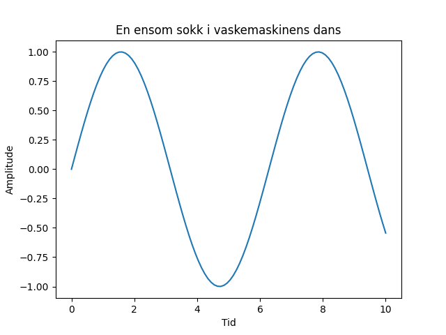

En ensom sokk i vaskemaskinens dans, mistet sin makker og all sin glans. Nå drømmer den om en ullen venn, og håper at tørketrommelen gir den tilbake igjen.

import matplotlib.pyplot as plt
import numpy as np
# Generer noen data for å lage en figur
x = np.linspace(0, 10, 100)
y = np.sin(x)
# Lag en figur og akse
fig, ax = plt.subplots()
# Plott dataene
ax.plot(x, y)
# Legg til tittel og etiketter
ax.set_title('En ensom sokk i vaskemaskinens dans')
ax.set_xlabel('Tid')
ax.set_ylabel('Amplitude')
# Lagre figuren
plt.savefig(output_path)execution_ok=True fallback_used=False image_ok=True